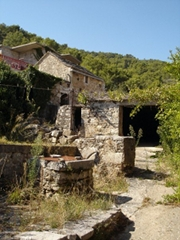
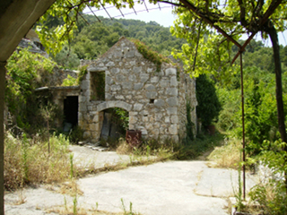
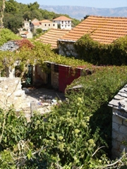
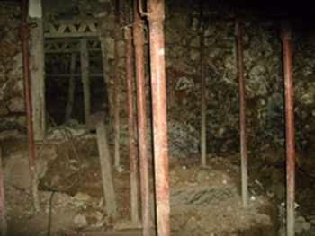
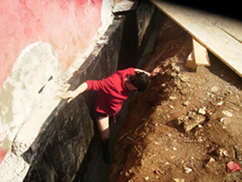
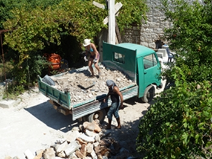

Hvar Holiday Rooms are run by Jana, an English yoga teacher, and Tony, a Croatian from Zagreb with old family ties to the Dalmatian coast. In 2006 Jana and Tony bought a site of derelict traditional stone buildings in the small Hvar village of Dol. Hidden away in the foothills of the central hilly peaks running the length of Hvar this old pretty village with its peaceful and sedate pace of life felt like the perfect location to build their home and base for their future.
  
There was lots of work to be done! The stone buildings that the islanders had built for their homes had lasted for hundreds of years but there was little in the way of plumbing and electricity, let alone the work needed to clear the site to allow proper construction to begin.
 
Determination and trusting to their wits took the place of any kind of budget to start the renovation and the next few years saw their patch of Dol - nicknamed the 'graveyard' by the local villagers such was their scepticism that anything could be done with it - slowly take shape.

With the occasional help of friends, neighbours and visitors Jana and Tony worked hard for the next few years to clear the site and organise construction of the essential facilities. The villagers grew used to seeing groups of exhausted dust-covered yoga students descending on the local cafe after being cajoled into helping out on the building site and anyone nearby who owned a truck or a digger was soon used to phone calls asking for a small favour [Something in here about bartering favours with the locals?].
2010 saw the previously derelict site finally take shape. With the construction work completed the individual rooms could finally be furnished and decorated and welcome their first guests. The gardens could be planted and the terrace areas could be enjoyed in peace and quiet to bask in the sun without anymore drilling, banging and hammering or the sound of another truck fighting its way up the little village streets.
We've worked very hard to make our rooms the kind of place we'd love to be, and we hope staying with us will help make your stay on Hvar a truly memorable one.